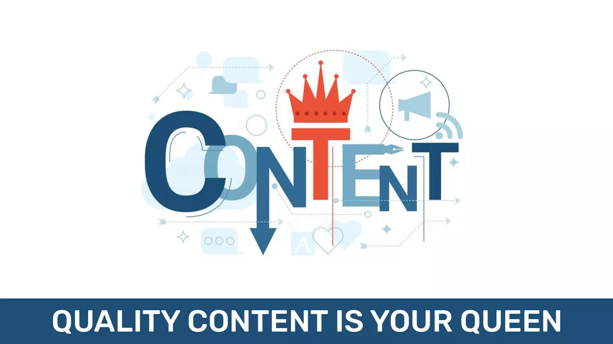
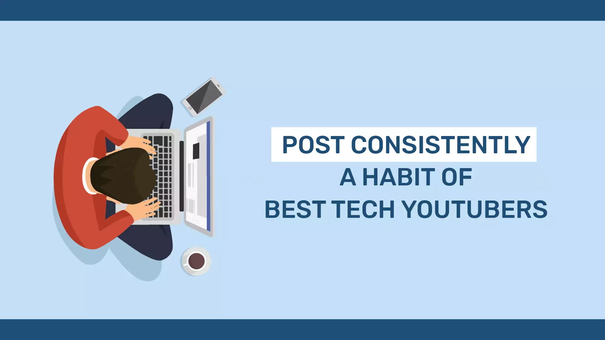
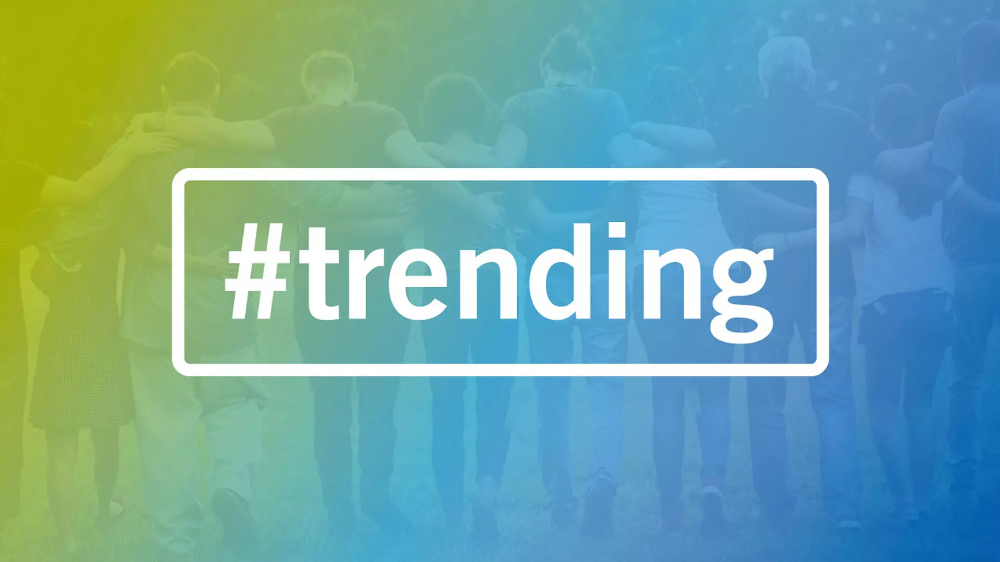
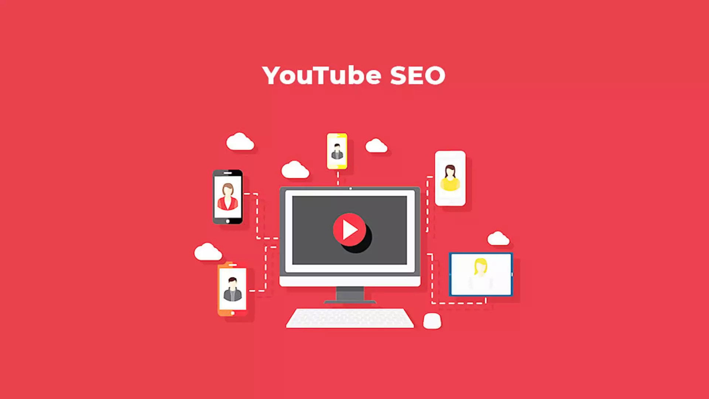
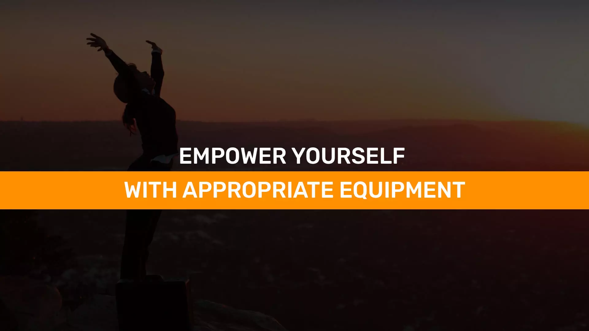
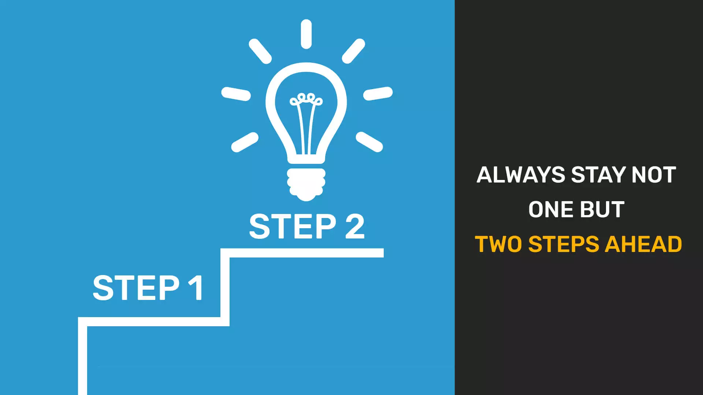
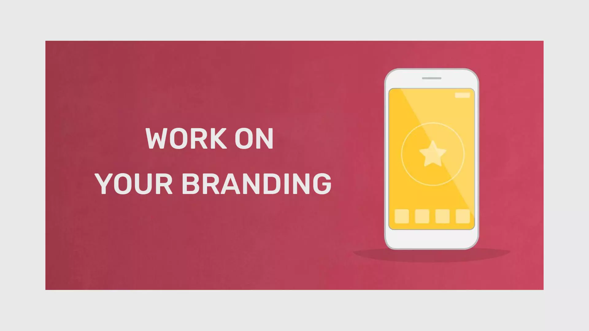

With increasing video content creators and video content consumers, a fair share is formed by those who create tech videos and those who watch them. Tech YouTubers now-a-days hit the hammer right on the head of the nail with their Tech Videos, i.e., they always make clear points. So, if you wish to start your Tech YouTube Channel or if you already have and want to grow your Tech YouTube Channel, either way you have landed on just the right place.
But first let’s get into the major question- How to start a Tech YouTube Channel?
The answer lies just around here! The first thing you have to do is lots and lots of research. Watch tech videos from the best Tech YouTube Channels, figure out what they are offering to their viewers. The next thing to do is find out what makes you different from them- find out your competitive advantage and work it into your videos. Always play to your strengths, make videos that you would want to watch!
Here are 10 tips that will help you turn your Tech YouTube Channel into a platform:
Contents
- 1. Quality Content is your QUEEN
- 2. Post Consistently: a habit of best Tech YouTubers
- 3. Trending Topics is your Triumph Card
- 4. Work on your YouTube SEO skills
- 5. Empower yourself with Appropriate Equipment
- 6. Always Stay Not One but Two Steps Ahead
- 7. Work on your Branding
- 8. Interact with your audience
- 9. Consider Free Contests and Giveaways
- 10. Collaborate with Fellow Tech YouTubers
Quality Content is your QUEEN

Think of YouTube as a game of chess where your Tech Channel is the king and quality videos is the queen that can save your king! That is the importance of Quality Content in building a Tech YouTube Channel. Always do your research before making a video and brush up on all the technical concepts you are going to discuss in your Tech video. This will help you score your first 1000 subscribers. You can even Buy YouTube Subscribers for your technology youtube channel that are real and active to get to your first 1000.
Post Consistently: a habit of best Tech YouTubers

Your next aim is to maintain consistency with your tech videos. By doing this you let your audience know when to come back to watch your next video. By sticking to your upload schedule, you retain subscribers and viewers and gain subscribers as well. This way your viewers keep coming back to your channel and also helps to grow your Tech YouTube Channel.
Trending Topics is your Triumph Card

Making viral videos is the best way to attract new viewers towards your Tech Channel. Use simple tools like Google Trends to find out what are the trending topics of your niche and create videos around those topics with a personalized effect so that your viewers feel exclusive. This is a great way to increase your youtube subscribers aggregate technology audience.
Work on your YouTube SEO skills

If you want your Tech videos to rank better, you have to stress upon your YouTube SEO. Find powerful keywords and optimize your video title, tags and description using these. By doing so, your videos will rank better in the search engine of YouTube and it will become easy for your viewers to discover your videos and help grow your Tech channel.
Ask viewers to subscribe to your tech channel
One of the easiest yet effective way to grow your tech YouTube channel is to gain more subscribers. How to do that? Well, just ask your viewers to subscribe to your tech channel at the beginning and end of every tech video. Sometimes your viewers need a little encouragement in order to become a subscriber. By asking them, you provide them that encouragement and consequently, they subscribe to your tech channel.
Empower yourself with Appropriate Equipment

It is true that content forms the most important aspect of your video but not having the right equipment will do a lot of harm to your video. Therefore, make sure that you have the necessary equipment required to shoot a decent video.
Always Stay Not One but Two Steps Ahead

Keep yourself updated with all the upcoming technical gadgets and request the brands with review boxes in advance. Make and publish review videos before anyone else and become the “Tech YouTuber” who always does it first! This way whenever there is buzz for a new upcoming gadget, viewers will know to tune in to your channel. This is a really great way to increase your subscribers and build your Tech YouTube Channel.
Work on your Branding

It’s important to make good videos, catchy thumbnails and optimizing your videos. But one factor that really influences a viewer to become a subscriber is your Tech YouTube Channel Branding. Your Tech Channel page should be thoroughly organized. Design good channel art, icon and tagline to make it look more professional as it will increase your viewer to subscriber conversion ratio by increasing subscribers.
Interact with your audience
Always interact with your audience, show them that they hold the utmost importance. Try to reply to as many comments as possible. By doing so you not only increase audience engagement in terms of likes, shares and subscribes but also get to know what your viewer thought of the video. You also learn what else they want to watch and therefore find content for your next video.
Consider Free Contests and Giveaways
A great way to increase engagement and dedication of your audience towards your Tech channel is to hold intriguing contests and giveaways. You can even live stream and hold QnA sessions to increase interaction with audience making your audience more loyal towards your Tech YouTube channel. This also helps to create positive environment in your YouTube community.
Collaborate with Fellow Tech YouTubers
When you collaborate with a YouTuber of your niche, you get the opportunity to tap into their dedicated audience and attract them towards your Tech YouTube channel. If they find your content worth watching, they won’t mind spending time on your channel becoming a subscriber. This is a great way to improve your internet presence and increase YouTube subscribers that are technology enthusiasts.
Over the years YouTube has evolved from being just a website to a community where people come to find all types of solutions and so do people with technological issues and dilemmas about which latest tech gadget will suit their needs best. All you have to do is find a place where you fit into!